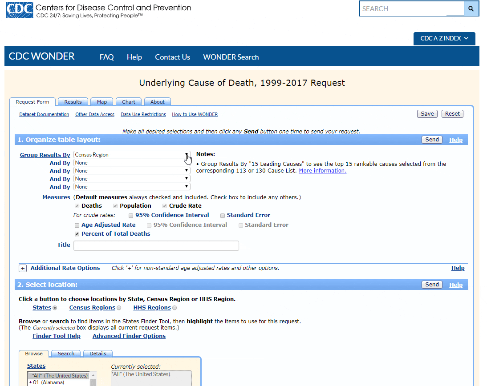
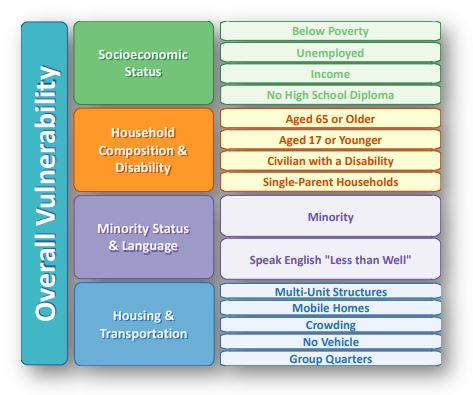

We are Team Morbid Curiosity. Our goal is to analyze United States Mortality and Demographic Data to identify patterns in deaths in the United States. The hope with this project is that it sheds light on areas of concern in the United States that can be addressed by public health professionals to help Americans live longer and healthier lives.
Database Setup


Data Sources

CDC WONDER manages nearly 20 collections of public-use data for U.S. births, deaths, cancer diagnoses, tuberculosis cases, vaccinations, environmental exposures, and population estimates, among many other topics. These data collections are available as online databases, which provide public access to ad-hoc queries, summary statistics, maps, charts, and data extracts.

Social Vulnerability Index: Social vulnerability refers to the resilience of communities when confronted by external stresses on human health, stresses such as natural or human-caused disasters, or disease outbreaks. The degree to which a community exhibits certain social conditions, including high poverty, low percentage of vehicle access, or crowded households, may affect that community’s ability to prevent human suffering and financial loss in the event of disaster.
Medicare Reimbursement Data: Dartmouth Atlas Medicare reimbursement rates are calculated from Medicare claims files from CMS. Fee-for-service patients enrolled in Medicare Parts A and B are included. The rates are adjusted for the age, sex and race of the underlying Medicare population. They are also adjusted for regional differences in prices.
Life Expectancy: Life expectancy at birth is defined as how long, on average, a newborn can expect to live, if current death rates do not change. However, the actual age-specific death rate of any particular birth cohort cannot be known in advance. If rates are falling, actual life spans will be higher than life expectancy calculated using current death rates. Life expectancy at birth is one of the most frequently used health status indicators. Gains in life expectancy at birth can be attributed to a number of factors, including rising living standards, improved lifestyle and better education, as well as greater access to quality health services.